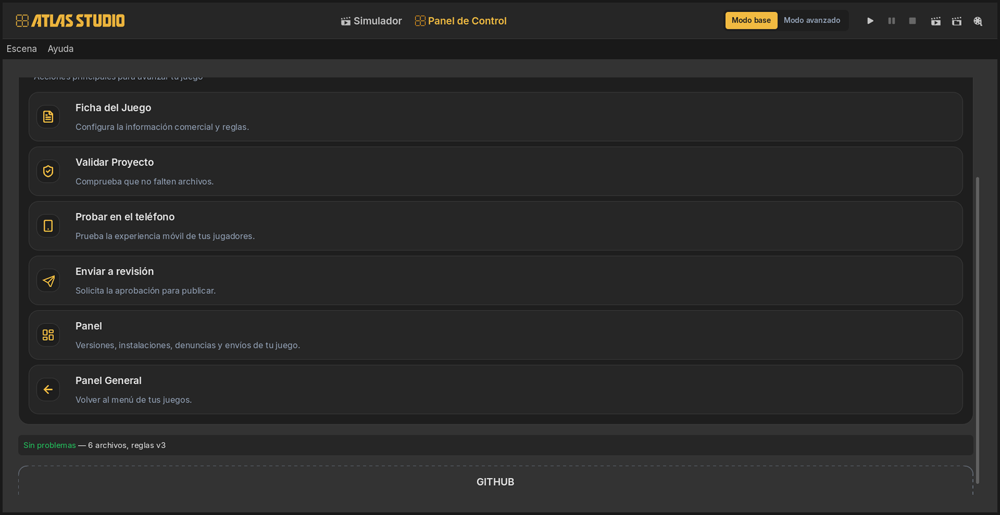
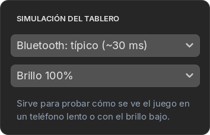
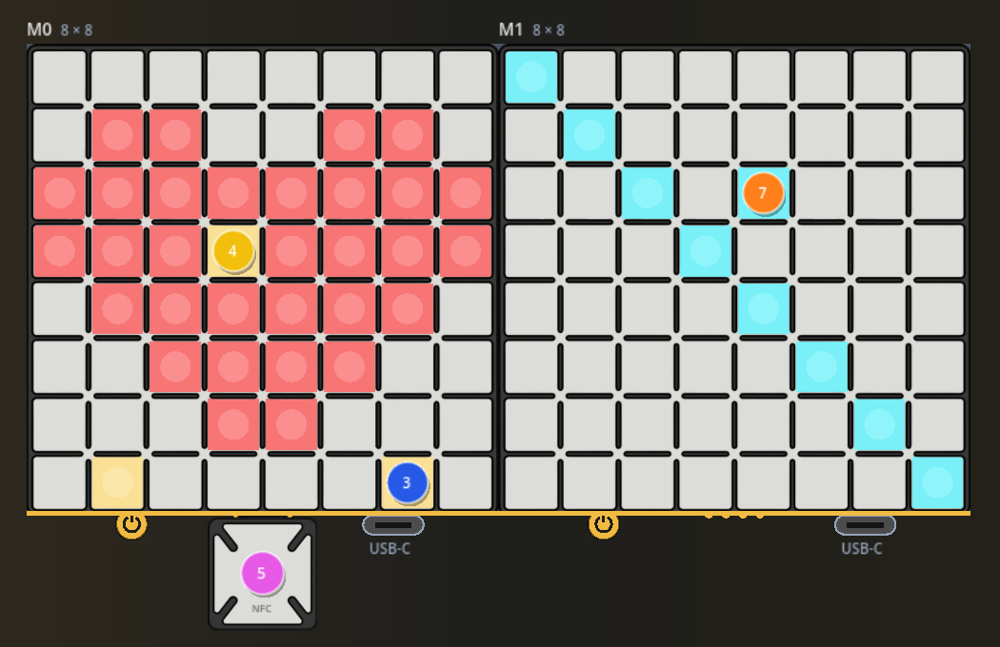

01Why let the agent test
Testing a board game by hand means placing the same pieces again and again, after every change. The agent in Studio can do that for you, and it doesn’t just look at the game: it reads it.
- It knows exactly which colour and brightness every cell is showing.
- It reads every text and button on the phone screen, and can tap them.
- It sees the game’s errors with the exact file and line, which you’d never see from the outside.
- It can place and lift pieces, use Atlas Core, add modules and slow down the Bluetooth.
So the best way to work is a split: the agent checks that the game does what you said; you check that it’s fun.
02The test loop
Every change the agent makes goes through the same three steps. You can also run them yourself at any time.
-
Validate
Validar Proyecto (validate project), in the Control Panel, checks the game against the same rules the store applies. If it passes here, the automatic checks of the store won’t reject it for those reasons.

A clean result: Sin problemas (no problems). When something is wrong, it says where and why. For example, if a game tried to write files on the phone:
✖ games/paint-the-board/main.gd:31 FileAccess no está disponible para los juegos [gd.forbidden_identifier] RECHAZADO — 1 errores, 0 advertencias, 6 archivos (reglas v3)You don’t need to understand that line. The agent does, and fixes it. What matters is that it was caught on your PC and not by the store a week later.
-
Run
The game restarts in the Simulator, with the pieces where they were. The agent waits until the game says it’s connected and reads anything it printed or any error it hit.
-
Play and read
The agent places pieces, taps buttons and then reads the board and the screen to compare them with what should have happened.
03What the agent sees
When the agent “looks” at the board, it gets something like this: a map of each module with the colour number of every lit cell. This is the heart from guide 3:
Módulo 0 (x 0→7, y 0→7 hacia abajo)
........
.11..11.
11111111
11131111
.111111.
..1111..
...11...
.3....3.
(1,1) idx 1 brillo 12 #e61f1a
(3,3) idx 3 brillo 12 #f2ba40
…
And when it checks what happened, it reads the Simulator’s log, piece by piece:
12:15:01 [comm] ficha_colocada mod=1 (7,7) 12:15:02 [comm] ficha_levantada mod=1 (7,7) 12:15:02 [comm] ficha_colocada mod=1 (4,2)
That’s why “when I lift the piece, the cell should stay painted” is such a good request: the agent can place a piece, lift it, read the map and know for sure.
04Ask for tests
You can ask for a test in your own words. A good test request says what to do and what should happen. Some to copy:
Test that a lifted piece leaves its cell painted: paint three cells in different colours, lift the pieces, and tell me what the board shows.
Play a full match from start to end like a player would, tapping the buttons on screen. Tell me anything that looks wrong, any error, and anything confusing on the screen.
Try to break the game: place several pieces at once, lift them in a different order, tap buttons in the middle of a move, restart in the middle of a match. Tell me what happened in each case.
Take a screenshot of the phone and tell me whether everything fits, can be read, and whether any button is too small to tap.
05Report a bug by pointing at it
When you find something wrong yourself, the fastest report is to show it:
- Press Señalar (point), under the phone.
- Click the button, text or cell that’s wrong. You can mark several.
- Write one line: “this should be blue”, “this text gets cut off”, “this cell didn’t light up”.
The agent receives exactly what you marked (which element of the screen, or which module and cell, with what it was showing) plus a picture with your selection in gold. No need to describe where it is.
06Test real-world conditions
Your game will run on phones of all speeds, on boards set to any brightness, on tables arranged in different ways. The Simulator can reproduce all of that.

- Slow Bluetooth. Lights reach the board later. If your game sends too many, they pile up and the board falls behind; the Simulator warns you.
- Brightness at 20%. Anything below brightness 8 disappears. Check that nothing important does.

- More or fewer modules. Añadir and Quitar change how many there are; drag and right-click to arrange them the way your game asks. What happens if a player has fewer than your minimum?
- Atlas Core. Drop a piece on it. In Administrar fichas you can turn a piece into “a different physical piece”, to test what your game does with a piece it has never seen.
Set Bluetooth to slow and brightness to 20%, play a full match and tell me whether the board falls behind or anything stops being visible.
07The platform rules, in plain words
Your game runs inside AtlasHub, on other people’s phones. These rules protect them, and the validator enforces them. The agent already knows them; this is so you know why it sometimes says no.
| Rule | Why |
|---|---|
| No access to the phone’s files, system or internet | A game can’t read someone’s photos or send data anywhere. Saving progress goes through Atlas, up to 64 KB per game. |
| Everything inside the game’s own folder | Many games share one app; none can touch another’s files or AtlasHub itself. |
| Only images, sounds, fonts, text and game files | Nothing executable travels inside a game. |
| Two technical rules about how files refer to each other | So your game never collides with another one installed on the same phone. The agent handles this. |
08What the Simulator can’t tell you
- Bluetooth timings are estimates. Real phones vary.
- Piece memory works only here. Reading and writing the memory of a piece on Atlas Core isn’t supported on the real board yet.
- Light on a real table looks different from light on a monitor, especially dark colours and low brightness.
- It can’t tell you if it’s fun. Only people at a table can.
That’s what the next guide is for.
09Before you take it to your phone
- Validar Proyecto says Sin problemas.
- You’ve played a full match in the Simulator, and so has the agent.
- It works with slow Bluetooth and 20% brightness.
- The screen explains how to set up the table, if your game uses more than one module or Atlas Core.
- The Ficha del Juego has a title, description and the right number of boards.